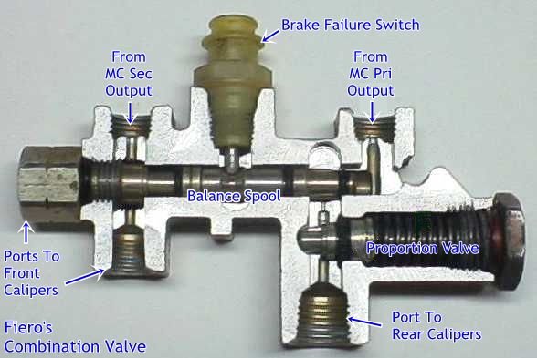
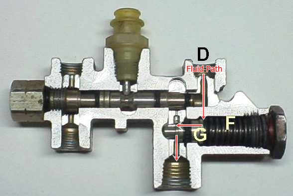

Go Home
Site Map
Go Home
Site Map
The Combination Valve
84-87 Fiero
Mapping the combination valve parts...

Source: Picture, Lawrence Mazza. Labels, The Orge.
88 Fiero
88 has some changes and uses different proportion valve spec's since 88 uses same Piston size front and rear with no natural bias. Please see That Combination Proportional Valve at PFF.
Update: Confirmed, 88 piston is same size but 88 uses a "true" prop valve and limit all rear line pressure. Not just high pressure in 84-87... Everyone think 88 has 50/50 braking is wrong. see Rodney's S10 Brake Booster - Review/Evaluation page 2 and 3.
How the combination valve works...
Proportion valve
Many OE proportion valve doesn't work in most stopping and only use in panic stop settings. Most people think all bias is done by a valve, the name is Proportion valve after all, but their wrong many times. Proportion valve think regulator and activate until the line reaches 500-900PSI from the Master Cylinder. The un-regulated to front brakes gets 1200psi or more. Prop valve doesn't activate in normal use. Many other ways to give you Bias, Fiero and most GM models included. In 84-87 Fiero case, only Hydraulics will give you Bias. If only the valve gives you Bias then when valve is dead then you have no Bias and likely only warning is car gets spinning around.
Advantage OE prop solution is no valve to blow up. Car has "natural" bias without a valve to die.
Why using a valve only in panic stops?
Think ABS only older... Rear line pressure is high but rear tire traction is low. Easier to spin out in panic stop when no "valve" to regulate pressure in back. Remember... Weight shift to front in braking. In panic stop, weight in back is low, very low...
Lawrence Mazza's Notes
Following text below was from WebElectric Magazine by Lawrence Mazza. That site was remove by him but his notes on the combination valve are posted below. (Ogre added red fluid path to both pictures.)
The pressure regulator, sometimes called a proportioning valve, is part of the combination valve in my car. In addition to reducing the pressure to the rear circuit, it also senses the balance of pressure between the front and rear circuits. I have seen service manuals that describe what these valves do, but I needed to know how they do it. So, I found a combination valve from an '85 Pontiac without ABS. I took it apart and tried to follow the ports to see what the fluid does. I couldn't tell how the rear proportioning took place, so I decided to section the valve to get a better look.
In the picture (click on it for a reference view), you'll see two spools. The one on the top is the pressure differential valve. It is connected between the front and rear brake circuit. In the middle of the spool is an indent that allows space for the warning indicator switch to extend. This spool normally sits in the center of the valve bore and is balanced in this position due to the equal pressure in the front and rear circuits.
Brake Failure
In the event of a brake failure, this spool shifts to the failed side. If, for instance, the rear brake line springs a leak, there won't be enough pressure build up in the line, and the pressure in the front circuit will shift the spool to the rear circuit side. When the spool shifts, it will raise the pin on the indicator switch, and that will light up your brake warning light (as if having the brake pedal go to the floor isn't warning enough).
The smaller spool on the bottom right is the proportioning valve. Its purpose is to reduce the brake line pressure to the rear wheels so that they don't lock up during a panic stop. To understand how it works, follow the fluid as it flows into the valve. Rear brake fluid enters through the port (D) and fills in the proportioning valve chamber (F). As pressure builds up, the spool (G) shifts to the right (in this case, toward the rear of the car). The amount of pressure required to shift this valve is the pressure reduction you will get in the rear circuit.
But let's say that you have a front brake line failure. Now you will only have the rear brakes to stop you, and it would sure be nice to have full rear braking rather than reduced braking due to the proportioning valve. This is accomplished with the pressure differential valve. As it shifts to the front side of the valve, it opens up a port that circumvents the proportioning valve. You still will have greatly reduce brakes because the fronts are gone, but at least you will have full rear braking power.
----
Here, the differential spool (A) has shifted to the front brake circuit because of a pressure failure, causing the o-ring seal (B) to move past the bypass port (C). This allows full pressure from the master cylinder through port D to flow to the rear brake circuit out port E.
That's the only failure mode in most GM, Ford, etc, combination valve. It will not cut off fluid for a leaking circuit. There is a nice explanation and animation of how a normal Master Cylinder and Combination Valve operates at How Stuff Works
Read more
This is Very good article on Brake Proportioning Valves from StopTech. 84-87 is Figure C. 88 is Figure B. Why? 88 uses same piston size front and back but earlier cars have some natural bias w/o prop valve. That also tell you how many vans and trucks variable valves works. (3/12)
Parts
I've never seen a rebuild kit for the combi valve. Try GM Parts for new ones or get a good used one. (Some GM parts dealers, like www.gmpartsdirect.com, shows all numbers are avaible to buy as of 1/12.)
Do not substitute/switch 84-87 and 88 valve.
84 exc Y82 10026021
84 w/ Y82 10036563 (RPO Y82 is Merchandised Pkg, Fiero = Fiero Indy)
85-87 10036563
88 10071501
Source 22P